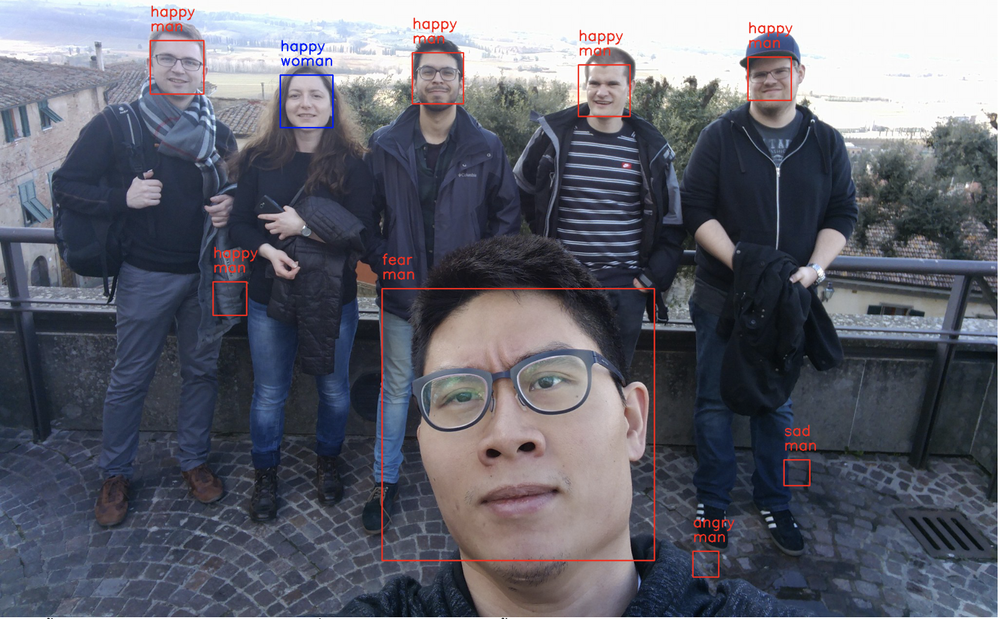
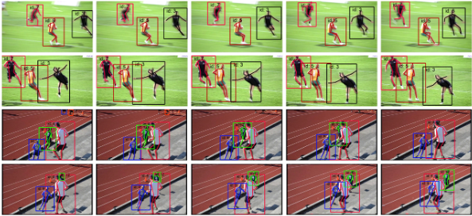
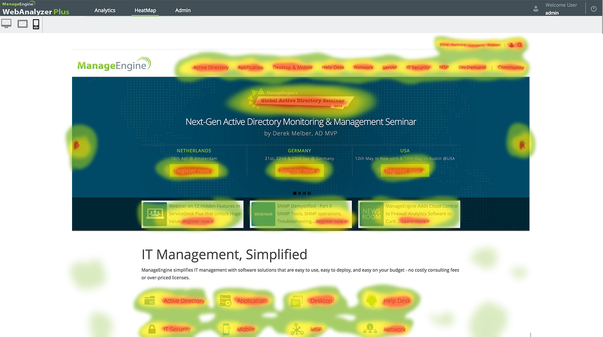

เป็นเกมส์ที่ควบคุมด้วยคอนโทรลเลอร์โดยใช้บอร์ด Arduinoเป็นตัวควบคุม
ใช้Anaconda ซึ่งเป็นแพลตฟอร์มสำหรับงาน machine learning และ Deep learning โดยเฉพาะ ทำให้เราสามารถใช้ python ได้

การประมาณการท่าทางนั้นอาจจะสามารถนำไปประยุกต์ใช้ เช่น ช่วยเหลือผู้สูงอายุเพื่อให้ได้รับการบำบัดอย่างถูกต้อง หรือ การเต้นเสมือนของมนุษย์ โดยโปรเจ็คนี้มาจากงานวิจัยของ Microsoft ที่ใช้ PyTorch ทำขึ้นมาชื่อว่า Simple Baselines for Human PoseEstimation
and Tracking ซึ่งได้นำเสนอโมเดลและเปรียบเทียบกันเพื่อเป็นไอเดียในงานวิจัยแนวดังกล่าว

Heatmap คือ การเก็บข้อมูลคลิก และบริเวณหน้าที่มีการอ่านสูงสุดบนหน้าเว็บไซต์ โดยจะสรุปมาเป็นจุดสี ๆ บนหน้าเว็บไซต์ที่เราเข้าใจได้ง่ายมาก ว่าส่วนไหนคนคลิกเยอะ ส่วนไหนคนอ่านเยอะครับ
